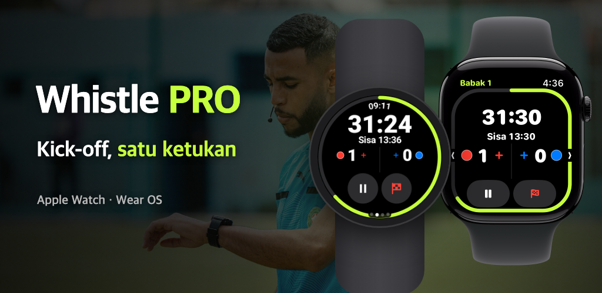

Whistle PRO
Cukup pakai jam tangan dan masuk ke lapangan.
Timer dan catatan laga untuk Apple Watch dan Wear OS, dibuat untuk wasit sepak bola.
Unduh di App Store
Google Play segera hadir

Cukup pakai jam tangan dan masuk ke lapangan.
Timer dan catatan laga untuk Apple Watch dan Wear OS, dibuat untuk wasit sepak bola.

Tarkam, klub, hingga liga usia muda. Seluruh laga berjalan di satu jam tangan, tanpa ponsel.
Jeda/lanjutkan, catat gol, atau urungkan dengan tombol, crown, atau bezel jam sambil berlari (PRO). Di Apple Watch dan jam Wear OS seperti Galaxy Watch.
Dua babak, kuarter, perpanjangan waktu, hingga adu penalti. Waktu terhenti dihitung terpisah untuk menyarankan tambahan waktu.
Pergelangan tangan bergetar menjelang akhir babak, saat jeda selesai, dan saat pemain sin bin boleh kembali.
Catat gol, kartu kuning, kartu merah, dan pergantian beserta tim dan nomor punggung. Kartu kuning kedua otomatis menjadi kartu merah.
Mulai dari standar FIFA, ubah durasi laga, jumlah pemain, batas pergantian, dan sin bin, lalu simpan sebagai preset.
Detak jantung, jarak, sprint, dan peta panas gerakan disimpan bersama catatan laga dan disimpan sebagai latihan di app Kesehatan (iPhone) atau Health Connect (Android).
Setelah laga selesai, bagikan langsung dari ponsel laporan berisi gol, kartu, pergantian, dan aturan yang dipakai.
Di tab [Peta] pada detail laga, sesuaikan keempat sudut lapangan untuk melihat peta panas gerakan Anda di atas foto satelit.
Untuk laga yang lapangannya sudah disesuaikan, ubah gerakan Anda menjadi video replay 15 detik dan langsung unggah ke media sosial.
Pilih warna kostum kedua tim di jam tangan sebelum kick-off, dan ubah di ponsel setelah laga.
Fitur penting untuk memimpin laga gratis; pencatatan dan analisis ada di PRO.
Tanpa langganan
Bulanan atau tahunan · uji coba gratis 7 hari
Berlangganan di aplikasi ponsel, dan batalkan kapan saja di pengaturan akun App Store atau Google Play.
Tanpa akun, tanpa server. Catatan laga dan data kesehatan hanya berpindah antara jam tangan dan ponsel Anda.
Lihat Kebijakan Privasi